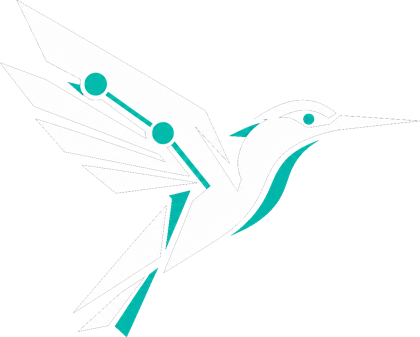

On entering, the hummingbird dematerialises into dust at the brand lockup, vanishes, and re-forms from nothing in the top-left of the header — where the brand lives. Click the splash (or Replay) to watch it. Tune the dust feel below.
Most levy-paying employers let millions expire unused. We turn yours into a plan.


Tip: this can sit on top of the real particle→wordmark splash — the bird just teleports out of the lockup to its header perch.